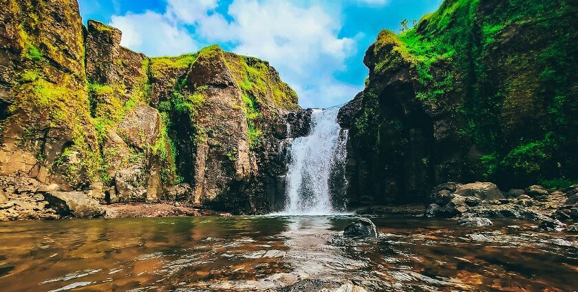
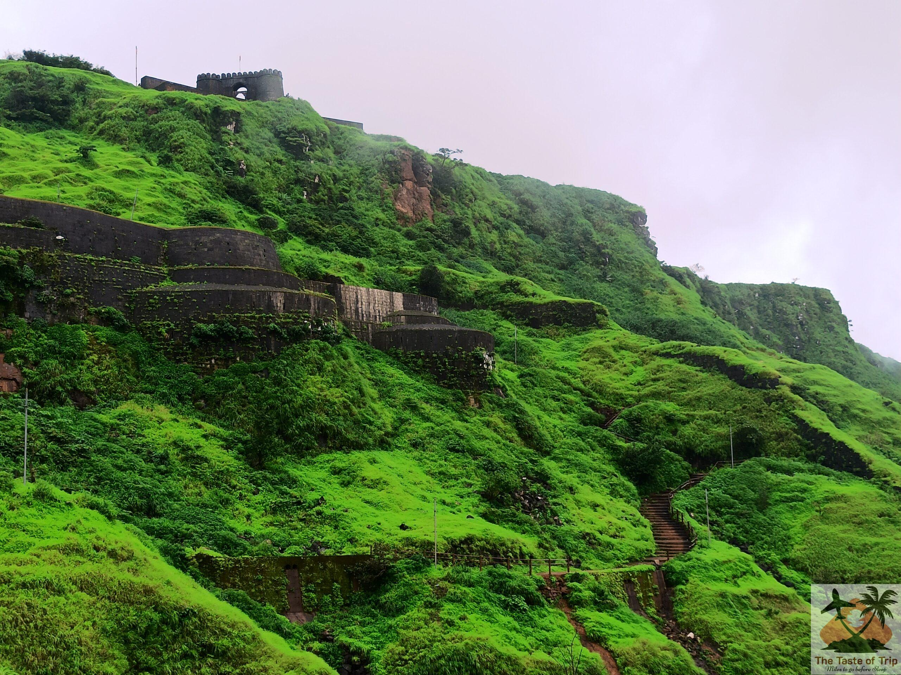
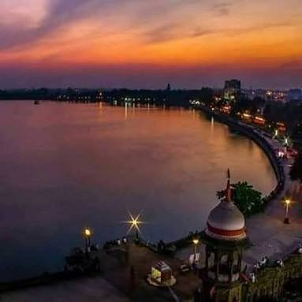
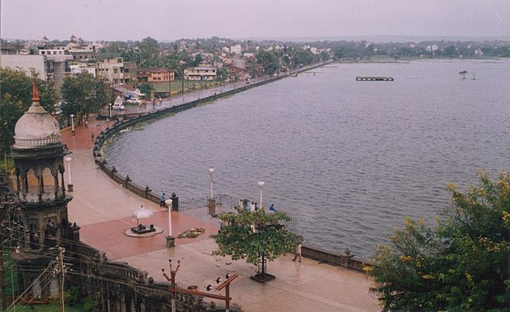

Kalammawadi Dam


1. History and Development
Construction Period: The construction of Kalammawadi Dam was initiated by the Government of Maharashtra in 1983.
It was successfully completed and opened in 1999, a significant infrastructure project for the region.
Inauguration and Significance:The dam was inaugurated by the late Prime Minister of India, Indira Gandhi, underscoring its national importance.
It was designed with a substantial water storage capacity of 28 Thousand Million Cubic (TMC) feet, addressing the growing water demands of the area.
2. Specifications and Structure
Kalamwadi Dam is a significant gravity dam located on the Dudhaganga River near Radhanagari in the Kolhapur district of Maharashtra,
India.It holds the distinction of being the largest dam in Kolhapur District.
It is a gravity dam, meaning it relies on its own weight and the force of gravity to resist the water pressure.
This design ensures stability and strength against the massive volume of water it holds.
The height of the dam above its lowest foundation is approximately 73.08 meters (239.8 ft).
Its substantial length is 1,280 meters (4,200 ft), creating a vast reservoir.
Panhala Fort


1. History of Panahala Fort
Panhala Fort (also known as Panhalgad) is a magnificent hill fort located about 20 km northwest of Kolhapur in Maharashtra, India. It stands as one of the largest and most historically significant forts in the Deccan region,
perched atop an outlying spur of the Sahyadri mountains. Built by the Shilahara ruler Bhoja II between 1178 and 1209 CE, it has witnessed the reigns of various dynasties including the Yadavas, Bahamanis, Adil Shahis, Marathas, Mughals, and eventually the British.
Shivaji's Initial Capture (1659): In the confusion following the death of Bijapur general Afzal Khan in 1659, Chhatrapati Shivaji Maharaj swiftly captured Panhala Fort from Bijapur, marking a significant victory for the nascent Maratha Empire.
2. Things that Make it More Attractive
key sections and why they are significant:
# Strategic Location and Fortifications
Elevated Position:- Panhala Fort is strategically built on a hill rising over 400 meters (around 1300 feet) above the surrounding plains. This elevation offered a commanding view of the trade routes connecting the coastal Konkan region with the Deccan plateau,
making it crucial for controlling commerce and military movements.
Extensive Walls and Bastions: The fort boasts a massive perimeter of over 7 km of fortifications, reinforced by high ramparts and numerous round bastions. These formidable defenses were designed to withstand prolonged sieges and inv
# Major Entrances (Darwazas)
Teen Darwaza (Three Gates): This is the grand and main entrance to the fort, featuring a series of three impressive gates with intricate carvings. Its multi-layered design made it a formidable defensive structure, historically a point where invaders faced significant resistance.
Wagh Darwaja (Tiger Gate): Located on the northern side, this gate is designed to be cleverly hidden and camouflaged by the natural scarp. It provided a secret or less obvious entry/exit point, which was crucial for strategic maneuvers during sieges, such as Shivaji Maharaj's daring escape.
Rankala Lake


1. Origin and History
Ancient Stone Quarry: Prior to the 8th or 9th century AD, the area where Rankala Lake now stands was a large stone quarry. This historical detail is quite unique for a lake.
Earthquake Formation: A major earthquake in the 9th century caused significant structural damage to the quarry, leading to the formation of a natural depression. This depression was then filled by underground water sources,
eventually forming the picturesque Rankala Lake we see today. Some local beliefs
2. Things That Make it Famous
Rankala Lake a favorite spot for both locals and tourists to relax and enjoy the serene environment.
# Lake Features and Surroundings
Expansive Water Body: Rankala Lake is one of the largest lakes in Kolhapur, covering an area of approximately 107 hectares. Its vast expanse of water provides a tranquil and visually appealing setting,
especially during sunrise and sunset.
Picturesque Landscape: The lake is surrounded by lush green hills, valleys, and well-maintained gardens and pathways. This natural beauty makes it an ideal spot for leisurely strolls, picnics, and photography.
# Recreational Activities
Boating Facilities: One of the most popular activities at Rankala Lake is boating. Visitors can choose from various types of boa.
Horse Riding and Other Fun: Horse riding is also a popular activity offered along the lake's banks, providing a fun and unique way to experience the area. Additionally, cycling and various food stalls contribute to a vibrant atmosphere, especially in the evenings.